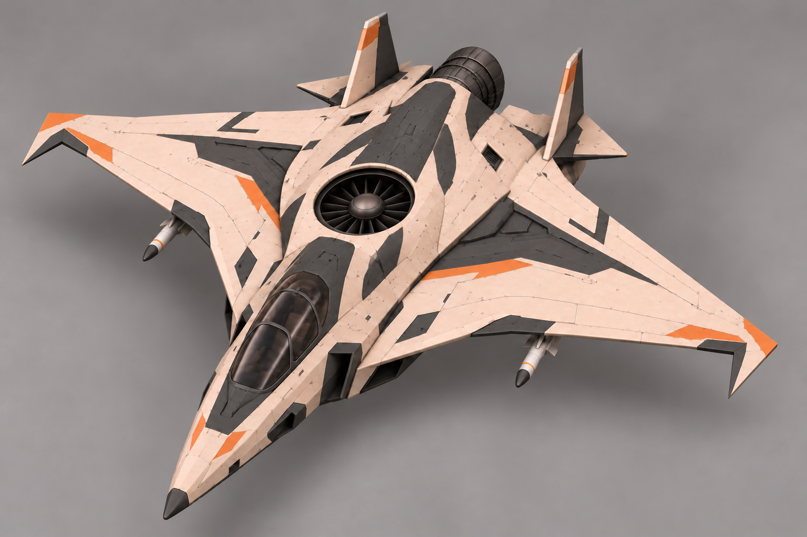

Финальный пакет для моделирования
Законцовки по правке автора: зеркальные острые гранёные серпы к кабине, с ломаным контуром вместо плавных скруглений. Сохранены одна центральная подъёмная турбина и одно заднее сопло с поворотом вниз. Ракеты на подвесах остаются предложением.
Паспорт · Промпты · Предыдущая версия
